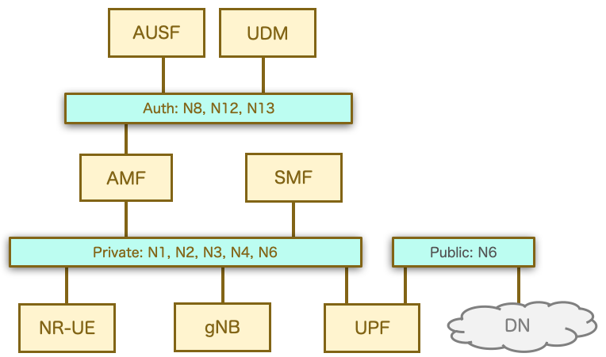

📙 OAI Full Stack 5G-NR RF シミュレーション¶
DockerHubにリリースされているOAIの各種CNFを使って、UE-RAN-CN-DNのフルスタックのデモができる。Kubernetesではなく、普通のDocker Composeで動かすシンプルなもの。AUSF/UDMをMySQLで代替する等、ナンチャッテCNFもある。

🟩 1. 構成¶
CNF一覧
CNF |
役割 |
参照点(プロトコル) |
備考 |
|---|---|---|---|
oai-nr-ue |
NR-UE |
N1(NAS) |
iperf実装 |
oai-gnb |
gNB |
N1, N2(NGAP), N3(GTPU) |
CU/DUに分離可能 |
oai-amf |
AMF |
N2, N12(SQL/TCP), N11(SBI) |
|
mysql |
AUSF/UDM |
N12 |
|
oai-nrf |
NRF |
(SBI) |
|
oai-smf |
SMF |
N11, N4(PFCP) |
|
oai-spgwu |
UPF |
N3, N4, N6 |
PGW-Uを拡張したもの |
oai-ext-dn |
DN |
N6 |
iperf実装 |
主なファイル
ファイル |
役割 |
|---|---|
|
本体。コア NF、gNB、UE ×10 の定義 |
|
OAI CN5G（AMF/SMF/UPF）共通の設定ファイル |
|
加入者 DB の初期データ（IMSI 208990100001100〜…115 の16件） |
|
MySQL の healthcheck（DB に初期データが入ったかを確認） |
|
手元でビルドした nr-softmodem / nr-uesoftmodem / librfsimulator.so を差し替えて動かす override |
|
UE を gdb の下で起動する override |
|
手順書と構成図 |
ネットワーク構成
public_net：192.168.71.128/26。制御系と N2/N3/N4、RFsim の通信が通るtraffic_net：192.168.72.128/26。N6（UPF から外部 DN への出口）


主なパラメータ
PLMN：MCC 208 / MNC 99、TAC 0x0001
スライス：SST=1（eMBB）、DNN は
oaiUE の IP プール：12.1.1.0/24（IPv4）
QoS：5QI 9、AMBR は UL 200 Mbps / DL 400 Mbps
無線：band 78、106 PRB、numerology 1（30 kHz SCS）、中心周波数 3319.68 MHz（
-C 3319680000）認証：K=
fec86ba6…、OPc=c4244936…（全 UE で共通）